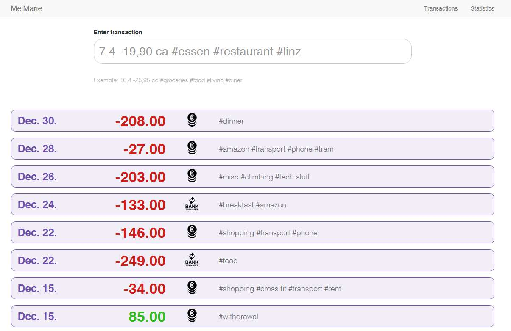
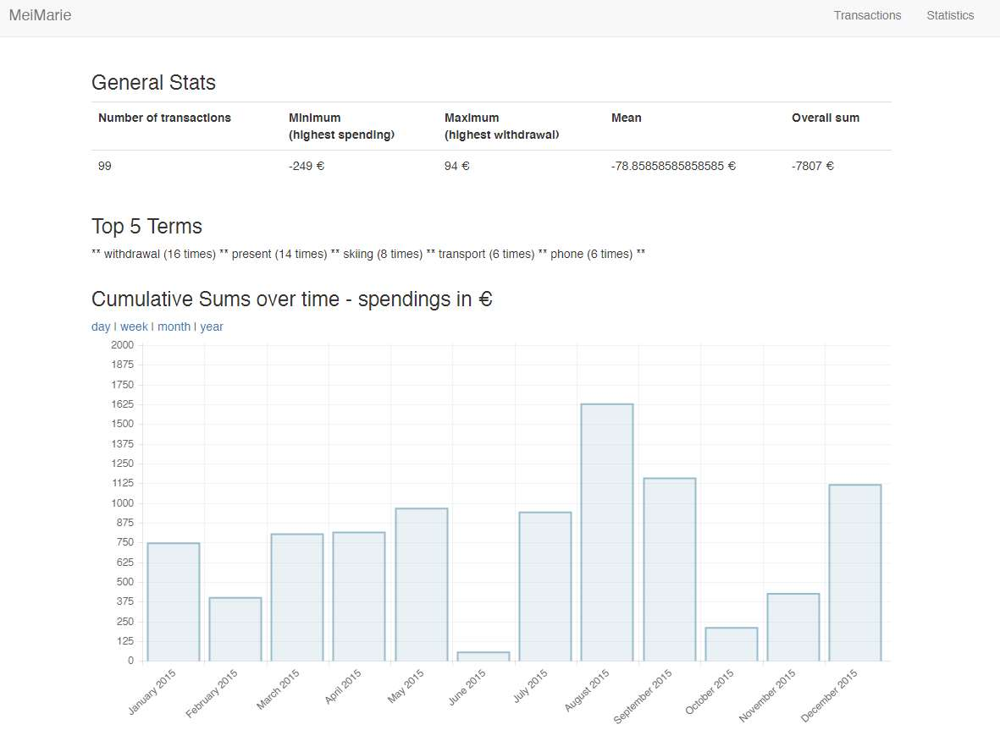

A Java developer in a Microsoft World
Elisabeth & Alexander Rosemann
Global Azure Bootcamp, Linz, 2016
Who we are ...
Agile Software Engineering - Java Enterprise Development
Intelligent Search Solutions - Elasticsearch - Solr - Lucene
Statistical Programming - GNU R
Intelligent Search Solutions - Elasticsearch - Solr - Lucene
Statistical Programming - GNU R
Cooking with Azure
One takes:
- Microsoft Azure as Cloud Computing Plattform
- A Linux Virtual Machine as operating system
- Elasticsearch as data store
- Dependency Management and Build Tool with Gradle
- Spring Boot for the backend implementation
- and AngularJS for the User Interface
... and enjoy !


Microsoft Azure Setup
Linux VM
Setup: Virtual Machines > Debian 8 "Jessie"
Size: A1 Basic (1.75 GB, 1 Core)
Microsoft Azure Setup
Oracle Java 8
sudo apt-key adv --keyserver hkp://keyserver.ubuntu.com:80 --recv-keys EEA14886 sudo apt-get update sudo apt-get install oracle-java8-installer
Verify: java -version
curl
sudo apt-get install curl
Verify: curl -Is https://www.google.com | head -n 1
Microsoft Azure Setup
Elasticsearch 1.5.2
wget https://download.elasticsearch.org/elasticsearch/release/org/elasticsearch/distribution/tar/elasticsearch/1.5.2/elasticsearch-1.5.2.tar.gz tar xfv elasticsearch-1.5.2.tar.gz chmod +x elasticsearch-1.5.2/bin/elasticsearch
nohup ./elasticsearch-1.5.2/bin/elasticsearch -Des.network.host=10.0.0.4 &
Verify: curl -XGET 'http://40.68.45.121:9200'
So far ....
Microsoft Azure Debian 8 VM
Java 8
curl
Elasticsearch
Gradle 2.12
Build Tool & Dependency Management
Gradle makes the impossible possible, the possible easy and the easy elegant.
Simple Gradle task
task hello << {
println 'Hello Global Azure Bootcamp :)'
}
Execution: gradle -q hello
Backend
Spring Boot 1.3.3
Takes an opinionated view of building production-ready Spring applications. Spring Boot favors convention over configuration and is designed to get you up and running as quickly as possible.
Simple Web Application
@Controller
@EnableAutoConfiguration
public class SampleController {
@RequestMapping("/")
@ResponseBody
String home() {
return "Hello Global Azure Bootcamp!";
}
public static void main(String[] args) throws Exception {
SpringApplication.run(SampleController.class, args);
}
}
Frontend
AngularJS 1.5.3
Superheroic JavaScript MVW Framework - HTML enhanced for web apps!
Simple HTML
<html ng-app>
<head>
<script src="https://ajax.googleapis.com/ajax/libs/angularjs/1.5.3/angular.min.js"></script>
</head>
<body>
<div>
<label>Name:</label>
<input type="text" ng-model="yourName" placeholder="Enter a name here"/><hr>
<h1>Hello {{yourName}}!</h1>
</div>
</body>
</html>
So far ....
Gradle - Dependency Management & Building
Spring Boot - Backend
AngularJS - Frontend
Data
Elasticsearch
Data prepared in JSON format
Import: curl -s -XPOST 'http://40.68.45.121:9200/meimarie/_bulk' --data-binary "@meimarie.json"
Gradle
dependencies and .jar definition
Spring Boot and AngularJS
Spring Boot Server
Spring Boot - MVC Controller + Test Case
Spring Boot - Repositories + Test Case
AngularJS - front end: data entry
Enhancements
Gradle - deployment
AngularJS - statistics
Summary
Microsoft Azure - Linux VM - Elasticsearch - Gradle - Spring Boot - AngularJS
Even Java developers can survive in a Microsoft world.